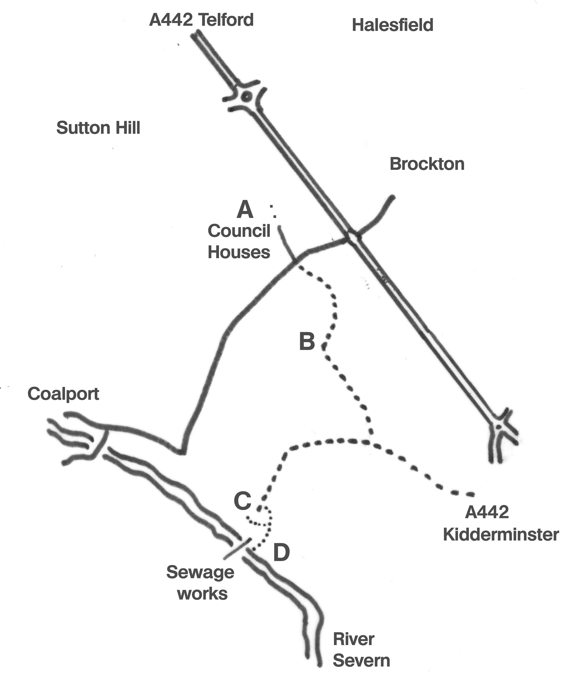

Exploring Telford
In the Footsteps of Bertram Baxter
by John Wooldridge
This page contents © John Wooldridge 2007
Sutton Wharf Tramroad, Shropshire

Exploring TelfordIn the Footsteps of Bertram Baxterby John WooldridgeThis page contents © John Wooldridge 2007Sutton Wharf Tramroad, Shropshire |
|
|
The Shropshire Canal, opened in 1792, formed the main element of the East Shropshire tub-boat canal system. By 1796 some of the ironmasters and coal owners of Snedshill and Hollinswood were in dispute with the canal company, especially because of the tolls for using the canal's inclined planes. As a result, by 1802 they had built their own tramroad, more or less parallel with the canal, to carry their goods to Sutton Wharf on the River Severn, about one mile downstream from the Shropshire Canal's wharf at Coalport. The tramroad avoided the canal's two inclined planes and provided a faster and cheaper means of transporting goods. In 1814, agreement was reached with the canal company and the tramroad was dismantled. The tramroad is clearly shown on Robert Baugh's 1804 map of Shropshire. This tramroad does not appear in Bertram Baxter's Stone Blocks and Iron Rails and I have found no mention of it in the Baxter Collection in Birmingham Library. This is surprising because, though this tramroad was in existence for only 12 years, it would seem to have been successful. Although many tramroads were built to a riverside wharf, most were built in conjunction with a canal. What is unusual about the Sutton Wharf tramroad is that it was built in competition with a canal; its success was perhaps an early indication of things to come. The RouteLanes End Cottage is at the head of the incline down to Sutton Wharf. To reach the incline, retrace your steps to the unmade road signed Sutton Wharf. It is marked Private but provides access to a small caravan site. 100 metres down this unmade road, on the right is a woodland path (not a public path) that soon crosses the incline. At this point, looking upwards, a slight embankment about 40 metres long ends at the building extension at the rear of Lanes End Cottage. Looking downwards is a cutting, 5 metres wide and up to 8 feet deep which ends after about 120 metres. Here an ugly, concrete junction box has been built on the incline through which the sewage of Telford is turned through 90 degrees, into two large pipes that cross the river to Gitchfield sewage works. This point on the incline
is more that 12 metres above the river. Projecting the line of the incline
downwards would suggest it terminated not far short of the water's
edge, close to the stile at the NW corner of the garden of The Cottage.
Early in the 1960s Barrie Trinder excavated some track at Halesfield.
He found sandstone blocks and measured the track bed as 1'8" wide.
The width of the incline would easily allow a double track and I would
estimate the gradient to be 1 in 5 or 6. Some means of controlling the
ascending and descending wagons would have been necessary, most likely
on the spot where Lanes End Cottage now stands Walk down the unmade road to Sutton Wharf D. The Cottage is at the riverside. It bears a plaque of a badger in relief, an indication that it was once part of the Badger estate. Two of the cottage's walls have blind arches that might suggest an earlier use. The occupier, who told me he was a 78 years old Brummie, was aware of the tramway but knew little about it. He believed that the nearby, three storey building dated from the 1780s and was listed. The building is disused and in danger of becoming ruinous. Rectangular in plan, it has a chimney breast at each gable end. I saw nothing to suggest it had ever been other than a large house. It could not be found on the local authority's register of Listed Buildings. Neither could I find any evidence of the wharf itself. |

Sketch map based on Ordnance Survey Explorer 242 | |